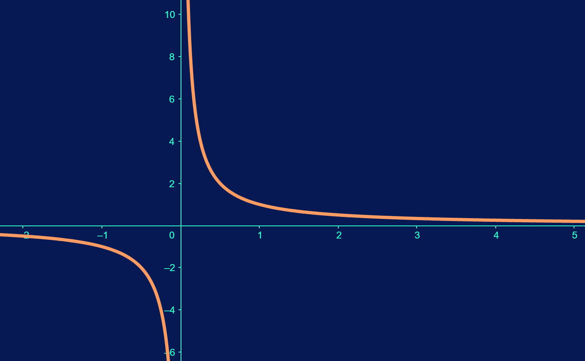

In Hilbert’s hotel, how do we accommodate a new customer if all rooms are booked?
Section 2.1 Harnessing \(\infty\)
"What is the largest number you can think of?" Hopefully, you see that is a question with no real answer. Maybe the closest we can come to answering that question is \(\infty \ldots\) even though we know \(\infty\) is not a number.
In fact, \(\infty \) is a weird creature. It breaks some of our number-intuition. It feels like \(\infty\) just does not behave. For example, can we add an infinite number of numbers and get something finite? We’ll see that you can \(\ldots\) sometimes. Some of our normal addition rules act differently when \(\infty\) is involved. For example, can \(\infty\) help us show that \(0 = 1 \text{?}\) Let’s start with \(0\text{,}\) and we know that \(0 = 1 + -1 = 1 + -1 + 1 + -1.\) Can’t we do this forever?
\begin{align*}
0 \amp = (1 + -1) + (1 + -1) + 1 + \ldots \\
\amp = 1 + (-1 + 1) + (-1 + 1) + \ldots \\
\amp = 1 + 0 + 0 + \ldots \\
\amp = 1
\end{align*}
This is a problem! Apparently, the associate law of addition doesn’t play well with \(\infty\text{.}\) You’ll discuss this example in greater detail in a later course, but this is enough to show that \(\infty\) can be very unusual.
Imagine a hotel with an infinite number of rooms that are all booked. This example is called Hilbert’s Hotel and is a great example to show that \(\infty\) does not behave with arithmetic like we typically like.
Question 2.1.2.
Question 2.1.3.
In Hilbert’s hotel, how do we accommodate \(k\) new customers if all rooms are booked?
Question 2.1.4.
In Hilbert’s hotel, how do we accommodate an infinite new customers if all rooms are booked?
Rules like \(a + 1 = a\) sound impossible, until we consider the strange creature we call \(\infty\text{.}\)
Subsection 2.1.1 Not always unpredictable
However, \(\infty\) is not completely unpredictable in all cases. Actually, we should say that a pattern trending towards infinity is sometimes predictable.
For example, consider the function \(f(x) = \dfrac{1}{x}\text{.}\) What happens as the variable \(x\) gets larger and larger (trends towards \(\infty\)).
Activity 2.1.1.
Fill out the following table and make a decision about what happens to \(f(x) = \dfrac{1}{x}\) as \(x\) trends towards \(\infty\text{.}\)
| \(x\) | \(f(x) = \dfrac{1}{x}\) |
| \(5\) | \(\) |
| \(10\) | \(\) |
| \(100\) | \(\) |
| \(1000\) | \(\) |
| \(1000000\) | \(\) |
| \(1000000000\) | \(\) |
What’s your decision?
So it seems as \(x\) gets closer to \(\infty\text{,}\) \(f(x) = \dfrac{1}{x}\) gets closer to 0. Let’s try something else. This time, let’s let \(x\) get close to \(0\text{.}\)
Activity 2.1.2.
Fill out the following table and make a decision about what happens to \(f(x) = \dfrac{1}{x}\) as \(x\) trends towards \(0\text{.}\)
| \(x\) | \(f(x) = \dfrac{1}{x}\) |
| \(5\) | \(\) |
| \(1\) | \(\) |
| \(.01\) | \(\) |
| \(.0001\) | \(\) |
| \(.0000001\) | \(\) |
| \(.0000000001\) | \(\) |
What’s your decision?
This time, \(f(x) = \dfrac{1}{x}\) seems to get larger and larger. We could say that as \(x\) trends towards \(0\) (at least from the positive side of the number line), \(f(x)\) trends towards \(\infty\text{.}\)
Actually, a graph would make these trends obvious.

Subsection 2.1.2 Movement On Paper
Trends like the ones we looked at in Activity 2.1.1 and Activity 2.1.2 are examples of limits, a foundational tool in the study of Calculus. We would write the conclusions from the past activities like
\begin{equation*}
\lim_{x \rightarrow \infty} \dfrac{1}{x} = 0 \text{ and } \lim_{x \rightarrow 0^+} \dfrac{1}{x} = \infty.
\end{equation*}
We’ll save defining limits clearly for your other coursework, but we can think about limits intuitively.
Firstly, we can think of limits as a way to introduce motion on paper. We "watched" the behavior of \(f(x) = \dfrac{1}{x}\) as \(x\) "moved" towards \(\infty\text{.}\) There are other examples in which we allow the number rectangles or the number of sides or the number terms and so on extend towards \(\infty\text{.}\) The limit is similar to the play button on a YouTube video. When you see \(\displaystyle \lim_{x \rightarrow a}\text{,}\) you can just imagine some sort of movement or change on your paper.
Secondly, the limit is the tool that allows us to tame \(\infty\text{...}\) Well, not "tame" \(\infty\text{,}\) but we can utilize \(\infty\) with a limit to accomplish some incredible things. We don’t tame the Mississippi River, but it is an enormous resource!
Subsection 2.1.3 So what is Calculus?
So what is calculus exactly? Calculus is a multifaceted branch of mathematics that serves as the bedrock of an enormous number of applications in a a huge variety of fields. However, common to all of the underlying ideas of calculus is harnessing \(\infty\) through limits to do something.
Let’s look at some examples of how, in some cases, we can predict the infinite. The first should be familiar to us.
Subsubsection 2.1.3.1 Limits of Functions
Question 2.1.8. Limit of Functions.
Use a table to evaluate \(\displaystyle \lim_{x \rightarrow 3^-} \dfrac{1}{x-3}.\) (By \(3^-\text{,}\) we mean we approach \(3\) from the left side of the number line. Try using numbers like \(2, 2.9, 2.99,\) and so on.)
Subsubsection 2.1.3.2 Geometric Series
Earlier, we added \(1 + -1 + \ldots\) an infinite number of times. Can we actually add an infinite amount of numbers and get a finite answer? Calculus says, "Yes! It is possible."
A geometric series is a summation of the powers of a number \(r\text{.}\) So it looks like
\begin{equation*}
r^0 + r^1 + r^2 + \ldots + r^n + \ldots.
\end{equation*}
For a lot of numbers, this sum gets larger and larger, but if \(|r| \lt 1\text{,}\) the sum will equal \(1/(1-r)\text{.}\) This should surprise you in some way. We can add up an infinite number of numbers and actually calculate the result with a nice, clean formula!
Question 2.1.9. Finding Geometric Series.
Calculuate the geometric series corresponding to \(\frac{1}{2}\text{:}\)
\begin{equation*}
\left(\dfrac{1}{2}\right)^0 + \left(\dfrac{1}{2}\right)^1 + \left(\dfrac{1}{2}\right)^2 + \ldots
\end{equation*}
Solution.
The value of \(r\) in this case is \(\frac{1}{2}\text{,}\) which is less than \(1\text{,}\) so our formula applies.
\begin{equation*}
\left(\dfrac{1}{2}\right)^0 + \left(\dfrac{1}{2}\right)^1 + \left(\dfrac{1}{2}\right)^2 + \ldots = \dfrac{1}{1-1/2} = \dfrac{1}{1/2} = 2.
\end{equation*}
All of that adds up to \(2\text{?}\) Wow. What about if we let \(r = 2/3\text{?}\)
Question 2.1.10. Another Geometric Series.
Calculuate the geometric series corresponding to \(\frac{2}{3}\text{:}\)
\begin{equation*}
\left(\dfrac{2}{3}\right)^0 + \left(\dfrac{2}{3}\right)^1 + \left(\dfrac{2}{3}\right)^2 + \ldots
\end{equation*}
Solution.
Like Question 2.1.9, \(|2/3| \lt 1\text{,}\) so
\begin{equation*}
\dfrac{1}{1-2/3} = \dfrac{1}{1/3} = 3.
\end{equation*}
Remark 2.1.11.
An infinite number of mathematicians enter a bar. The first mathematician says, "I’ll take a drink." The second says, "I’ll have half of what he has." The next says, "I will have half of what he (the 2nd mathematician) has."
After the fourth mathematician continues this pattern, the bar tender shouts "HERE!", slams down two drinks on the bar, and walks away.
Let’s look at one more example.
Subsection 2.1.4 Recursive Sequences
A sequence, \((a_n)\text{,}\) is just an infinite list of terms. A familiar example would be \(1, 2, 3, 4, \ldots\text{,}\) the sequence of natural numbers. A sequence is different than a set in that the order of the terms matters. So \(a_i\) is the \(i^{th}\) term in the sequence \((a_n)\text{.}\) Make sense? The terms in a sequence typically are defined by a rule. For example, if \(a_n = n^2 + 1\text{,}\) then \((a_n) = (1^2 +1), (2^2 + 1), \ldots , (n^2 +1), \ldots\)
A sequence is a recursive sequence if the rule for \(a_n\) involves earlier terms in the sequence. For example, suppose \(a_1 = 1\) and, after the first term, \(a_n = \dfrac{4a_{n-1}}{3a_{n-1}+3}\text{.}\) Then \(a_2 = 4(a_1)/(3a_1 + 3) = 4/(3 + 3) = 2/3,\) and so on.
Question 2.1.12. Recursive Terms.
What is \(a_3\) in our recursive sequence?
The big question is whether this recurvise sequence, like the function and the geometric series we saw earlier, has a limit? The answer is "yes", but how would we find it?
If you take an analysis course (Maybe Advanced Calculus or Intro to Real Analysis), you will see questions like this, and to find a limit of our recursive sequence you would have to prove two important pieces of information. First, the terms in our sequence either need to get progessively smaller or larger with each sequential term, and secondly all of the terms must be smaller than some number \(b\) and larger than another number \(c\) (That is, \(c \leq a_n \leq b\) for each term \(a_n\text{.}\)).
If these two facts are true, then the Monotone Convergence Theorem guarantees the recursive sequence has a limit.
To save us some trouble, we’ll use Sage to calculate a few terms of our sequence.
Question 2.1.13.
Use the Sage cell to make a hypothesis about if \(a_n\) either is (1) increasing or decreasing and (2) bound above or below by a number.
Solution.
It looks like \(a_n\) is (1) decreasing and (2) bound above by 1 and below by 0. However, this is just a hypothesis.
Question 2.1.14.
Does the recursive sequence defined by \(a_1 = 1\) and \(a_n = 4a_{n-1}/(3a_{n-1}+3)\) satisfy the conditions of the Monotone Convergence Theorem? (See the solution.)
Solution.
Yes, it does, but proving that is beyond the scope of what we’re doing here. It can be a little complicated.
In mathematics, it’s not a good idea to take things for granted, but for the purpose of illustration, suppose we have shown that \((a_n)\) is decreasing (getting smaller with each term) and always larger than \(\frac{1}{3}\text{.}\) That means that our sequence does have a limit. Let’s call this mysterious limit point \(a\text{,}\) and here’s how we find what \(a\) is.
We know that \(\displaystyle \lim_{n\rightarrow \infty}(a_n) = a\text{,}\) and so that also means that \(\displaystyle \lim_{n\rightarrow \infty}(a_{n-1}) = a\) (How would the very first term really affect what the sequence approaches towards \(\infty\text{?}\)). So
\begin{align*}
a \amp = \displaystyle \lim_{n\rightarrow \infty}(a_n) \\
\amp = \displaystyle \lim_{n \rightarrow \infty} \dfrac{4a_{n-1}}{3a_{n-1}+3} \\
\amp = \dfrac{\displaystyle \lim_{n \rightarrow \infty}4a_{n-1}}{\displaystyle \lim_{n \rightarrow \infty}(3a_{n-1}+3)}\\
\amp = \dfrac{4a}{3a + 3}.
\end{align*}
All of that to say that our limit \(a\) satisfies the equation \(a = 4a/(3a + 3).\)
Question 2.1.15.
Find the limit point of our sequence by solving the equation \(a = 4a/(3a + 3).\)
Solution.
This is just algebra at this point.
\begin{align*}
a \amp = \dfrac{4a}{3a + 3} \\
a(3a+3)\amp = 4a \\
3a^2 - a \amp = 0 \\
a(3a-1) \amp = 0.
\end{align*}
So either \(a = 0\) or \(a = 1/3\text{,}\) but we already know that \(a \geq 1/3,\) so \(a = 1/3\text{.}\)
This is a complicated example, but we are highlighting how even though \(\infty\) can act strangely, we can use it to answer complicated quesetions... like how this sequence will trend towards \(1/3\text{!}\)